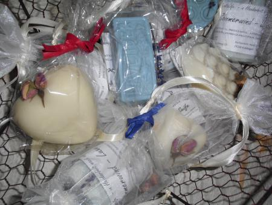
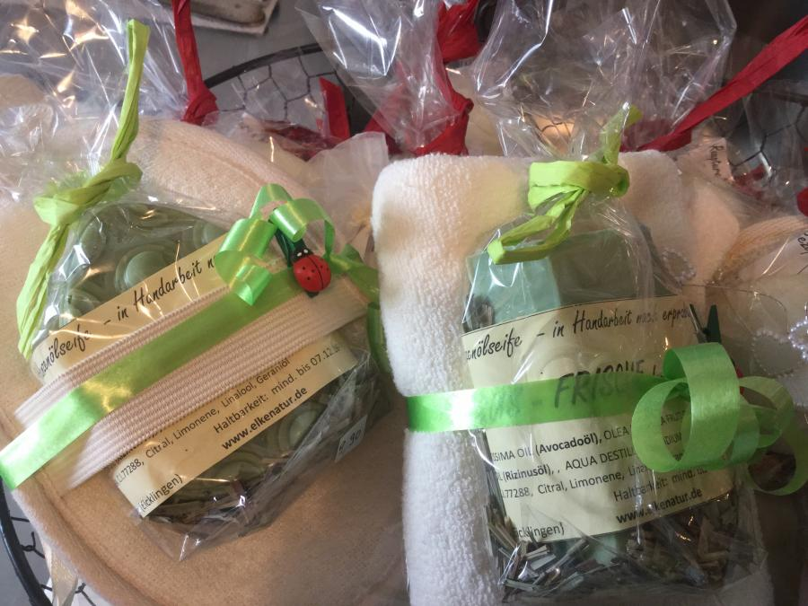

Bezugsquellen
Meine Produkte können sie bei
"Severlohs Kartoffelkiste" in Oppershausen
und in der
"Wathlinger Blume" in Wathlingen
erwerben
Im derzeitigen Seifensortiment befinden sich:
- Rosenholz-Luxus-Seife
- Lavendel-Luxus-Seife
- Sommerwind-Luxus-Seife
- Luxus-Pur (ohne Duft)
- Zitrus-Frische - Seife mit hohem Anteil an Avocado- und Hanföl
- SEIFENFLOCKEN-KREATIV-SET mit Sheabutter (Himbeere/Rosenblüten) - mit wiederverwendbarem Zubehör
ALLE PRODUKTE SIND PALMÖLFREI UND ENTHALTEN AUSSCHLIESSLICH NATÜRLICHE DÜFTE!

Badezusätze:
• BADEÖL "LAVENDEL"
Ein sehr entspannender Badezusatz mit hohem Anteil an ätherischem Lavendelöl und hautpflegenden Pflanzenölen.
Dosierung: 1-2 EL in das einlaufende Badewasser geben.
Bitte beachten Sie auch die Rutschgefahr durch Ölrückstände (Badewanne gründlich ausspülen)!
• BADEÖL "ABENDTRAUM"
Ein kuscheliger Badezusatz für die kalte Jahreszeit mit viel natürlichem Mandarinenöl zur Einstimmung auf die Vorweihnachtszeit. Es enthält eine Mischung aus einem hohen Anteil besonders hautpflegender Pflanzenöle (wie Jojoba- und Aprikosenkernöl) und entspannenden ätherischen Ölen (15ml/100ml) und ist sehr ergiebig.
Dosierung: 1-2 EL in das einlaufende Badewasser geben
Achtung! Sehr hoher Anteil hochwirksamer ätherischer Öle - deshalb für Allergiker nicht geeignet!
Bitte beachten Sie auch die Rutschgefahr durch Ölrückstände (Badewanne gründlich ausspülen)!
Die Badeöle können auch zum Duschen verwendet werden !
• BADEPRALINEN „BLÜTENTRAUM“ (nicht sprudelnd)
Die Badepralinen sind auf der Basis von Kakao- und Sheabutter (mehr als 30%) hergestellt und enthalten neben pflegendem Buttermilchpulver auch hochwertige ätherische Öle, die für einen angenehmen Duft und ein entspannendes Bad sorgen.
Wenn Sie die Pralinen (ca. 1 Rose oder 2 Herzen) ins einlaufende Badewasser geben, schmelzen sie und setzen ihre pflegenden Öle frei, die die Haut zart und geschmeidig machen.
Ein großes Herz (50 g) kann geteilt und für 2 Vollbäder verwendet werden.
(Die Badepralinen sind aufgrund ihrer leicht schmelzenden Inhaltsstoffe in den Sommermonaten nicht erhältlich.)
• SALZ-MILCH-BAD (basisch) in verschiedenen Varianten
Alle Sorten bestehen aus Seifenflocken, Buttermilchpulver und Salz aus dem Totem Meer. Das Tote Meer Salz beruhigt die Haut und das Buttermilchpulver spendet Feuchtigkeit und macht die Haut angenehm glatt. Dieser Badezusatz ist besonders für Menschen mit empfindlicher Haut geeignet.
Dosierung: 3-4 EL pro Vollbad
(Tip zum Auflösen des Badezusatzes: entweder zuerst etwas heißeres Wasser in die Badewanne geben, dann das Badesalz dazu geben und danach auf die gewünschte Temperatur einstellen oder das Badesalz in einem seperaten Gefäß in heißem Wasser auflösen und in die mit Wasser gefüllte Wanne geben.)
----------------------------------------------------------------------------------------------------------------------------
NEUE PRODUKTE:
• Transparentseife "Zitrone":
Gießseife auf Glycerinbasis (pflanzlich) und einem hohen Anteil an ätherischem Zitronenöl und dadurch sehr frischem Duft.
• REISESEIFE in der praktischen Dose mit Sichtfenster in verschiedenen Sorten, Formen und Größen
-------------------------------------------------------------------------------------------------------------------------------
weitere duftende Produkte
• Duftsäckchen Lavendelduft (mit französischem Lavendel)
• Lavendelblütenwasser (Herkunft: Bulgarien) zur Verwendung als erfrischendes Bodyspray, zur Beruhigung der Haut nach dem Sonnenbad oder als mildes Gesichtswasser.
